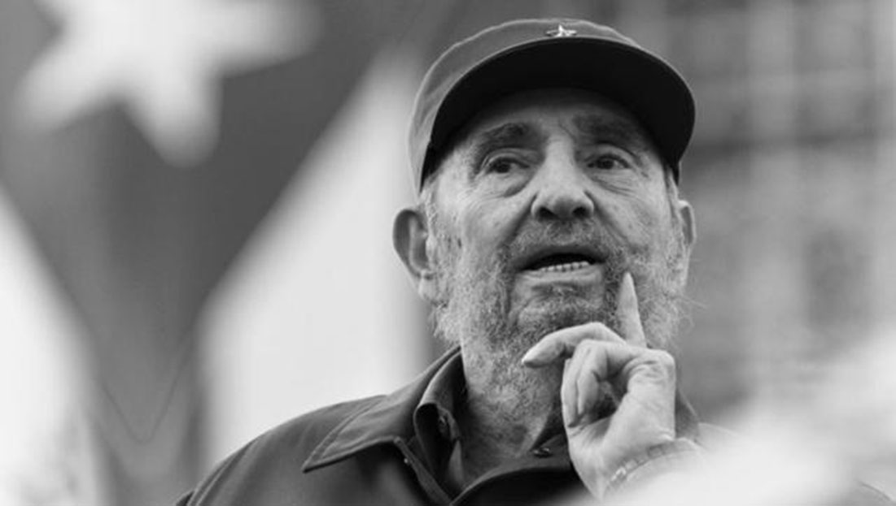

菲德尔·卡斯特罗
古巴革命领袖

菲德尔·卡斯特罗发表演讲：“我终将离去，但理想不朽！”
以下是菲德尔·卡斯特罗的生平经历：
1926年
-出生于古巴东方省（现奥尔金省）比兰镇
1945年
-于哈瓦那念完耶稣会的学校。同年，他进入哈瓦那大学法律学院学习
1947年
-加入了一个由奇瓦斯（Eduardo Chibas）成立的政党
1948年
-前往哥伦比亚首都波哥大参加拉丁美洲学生组织的一场政治会议——反帝反殖学生大会
1950年
-毕业于哈瓦那大学，获法学博士学位
1953年
-卡斯特罗兄弟为首的165名革命分子向古巴圣地牙哥的蒙卡达兵营和巴亚莫兵营等次要目标进攻以推翻巴蒂斯塔政权， 最后失败被捕
1955年
-获释后，离开古巴到墨西哥并成立七二六运动
1956年
-回到古巴，在马埃斯特腊山区创建起义军和根据地
1959年
-率领起义军推翻巴蒂斯塔独裁政权，建立美洲首个共产主义政权，称之为“古巴革命政府”，并出任古巴总理（1976年废除总统制后改称部长会议主席）和武装部队总司令
1965年
-该党改名为古巴共产党后，继续担任中央委员会第一书记至2011年完全退休
1976年
-担任古巴国务委员会主席至2008年退休
2011年
-成为世界上被暗杀次数最多的人物，载入吉尼斯世界纪录
2016年
-去世，享年90岁
“菲德尔是所有拉美人民的父亲。”
如果你有兴致继续了解菲德尔·卡斯特罗这位可敬的人，查看
他的维基百科页面
阅读更多内容。